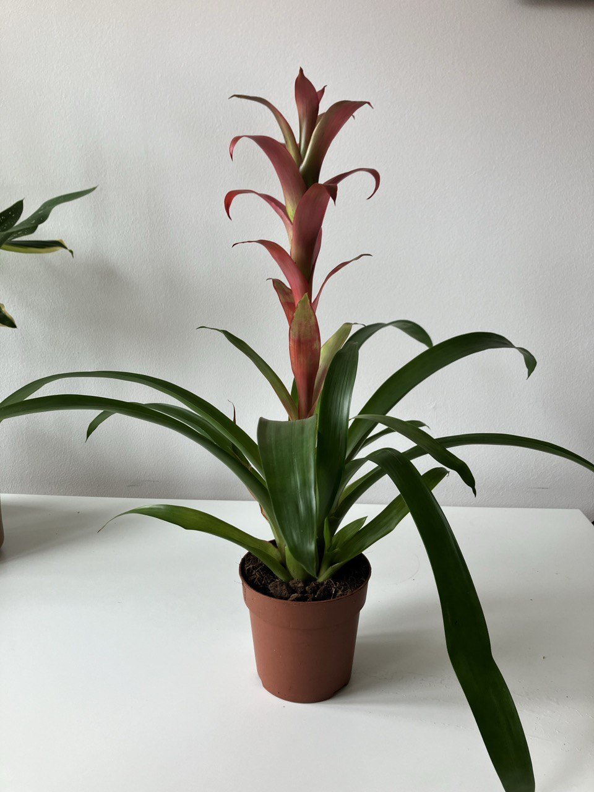

Activity
- Scheduled
- Feeding 01-09-2024
Bromelia Plant Care Guide
Environment setup
Light
- Indirect Sunlight: Bromeliads prefer bright, indirect light. Direct sunlight can scorch the
leaves, while too little light can hinder growth. A spot near a window with filtered light is ideal.
Soil
- Well-Draining Soil: Use a potting mix designed for Bromeliads or an orchid mix. The soil should
be light and fast-draining. A mixture of peat, bark, and sand works well.
Temperature
- Warm Temperatures: Bromeliads thrive in temperatures between 70-90°F (21-32°C) during the day
and slightly cooler at night. They can tolerate temperatures as low as 50°F (10°C) but should be protected from
frost.
Routine jobs
Watering
- Watering Schedule: Water the Bromeliad sparingly. Overwatering is a common mistake. The soil
should be kept moist but not soggy. Allow the top inch of soil to dry out between waterings.
- Central Cup: Many Bromeliads have a central cup (tank) formed by their rosette of leaves. Keep
this cup filled with water, but change it out regularly to prevent stagnation and algae growth.
- Humidity: Bromeliads enjoy high humidity. If the air is dry, consider misting the plant or
placing it near a humidifier.
Feeding
- Fertilization: Feed Bromeliads monthly during the growing season (spring and summer) with a
balanced liquid fertilizer diluted to half strength. Apply the fertilizer to the soil or the central cup, but
not directly on the leaves.
Potting
- Container Choice: Choose a pot with drainage holes to prevent waterlogging. Bromeliads can be
grown in small pots as they have a shallow root system.
- Repotting: Repot only when necessary, usually when the plant outgrows its container or the soil
becomes compacted.
Troubleshooting
- Common Pests: Watch for common houseplant pests such as aphids, mealybugs, and spider mites.
Treat infestations promptly with insecticidal soap or neem oil.
- Leaf Care: Remove any dead or damaged leaves to keep the plant healthy and prevent disease.
Flowering
- Bloom Cycle: Bromeliads typically bloom once in their lifetime, producing a colorful flower
spike. After blooming, the main plant will eventually die, but it will produce offsets (pups) that can be
separated and grown into new plants.